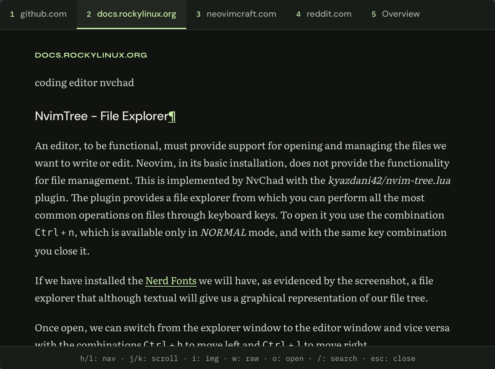

Search without
interruption.
Search the web from any app on your Mac.
Press ⌥ space, search, and read the page.
STRAFE IN ACTION
37-second demo · macOSSearch, read, and return to your work. Open the video ↗
01 / EXPLORE THE APP
Real screenshots from Strafe
Read Rocky Linux documentation in a clean text view.
Open full-size screenshot ↗02 / SEARCH AND READ
Search results in a text readerRead results
with your keyboard.
Press Option + Space from your Mac. Enter a query and read the results in a stripped-down reader.
Move to the next article with a keystroke. Open the original in your browser when you need it, or press Escape to return to your work.
View keyboard shortcuts03 / KEYBOARD SHORTCUTS
Reader controlsOpen Strafe from any app.
Open Strafe with Option + Space.
Change the shortcut in Settings.
- Previous / next article
- hl
- Scroll down / up
- jk
- Search again
- /
- Open in your browser
- o
- Return to your work
- esc
Download Strafe.
Download Strafe for macOS on Apple Silicon.
Enter a Brave Search API key to run searches.
- 01
Install the app.
Open the DMG and drag Strafe to Applications.
- 02
Add your API key.
Enter your Brave Search API key ↗ on first launch.
- 03
Enable the keyboard shortcut.
Grant Accessibility access for the global shortcut, then press Option + Space.